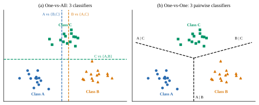
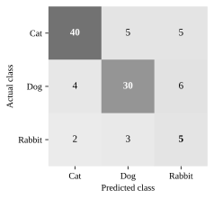

Algorithms such as logistic regression, perceptron and SVM are naturally binary. To solve a K-class problem with them, we break it into several binary problems and combine the answers. The two standard strategies are One-vs-All (OvA) and One-vs-One (OvO).

Example (classes A, B, C): classifiers A-vs-{B,C}, B-vs-{A,C}, C-vs-{A,B} give scores 0.2, 0.7, 0.4 for a new point, so it is classified as B.
Example: A|B votes B, A|C votes A, B|C votes B. Votes: A = 1, B = 2, C = 0, so the prediction is B.
| Number of classes K | OvA (K) | OvO (K(K−1)/2) |
|---|---|---|
| 3 | 3 | 3 |
| 4 | 4 | 6 |
| 10 (digits) | 10 | 45 |
| Basis | One-vs-All | One-vs-One |
|---|---|---|
| Classifiers | K | K(K − 1) / 2 |
| Training data per model | Whole dataset | Only the two classes involved (smaller) |
| Decision rule | Highest score (argmax) | Majority voting |
| Class imbalance | Each model is imbalanced (1 class vs K − 1 classes) | Each pair is roughly balanced |
| Cost | Fewer models; suits large K | Many models, but each trains fast; suits algorithms that scale badly with n (kernel SVM) |
| Ambiguity | Scores from different models may not be comparable | Tied votes are possible |
| Used by | Logistic regression, LinearSVC (default) | SVC with kernels in scikit-learn |
For K classes the confusion matrix is K × K: rows are actual classes, columns are predicted classes. The diagonal holds correct predictions. For any class k:

| Class | TP | FP | FN |
|---|---|---|---|
| Cat | 40 | 4 + 2 = 6 | 5 + 5 = 10 |
| Dog | 30 | 5 + 3 = 8 | 4 + 6 = 10 |
| Rabbit | 5 | 5 + 6 = 11 | 2 + 3 = 5 |
Actual totals: Cat 50, Dog 40, Rabbit 10. Predicted totals: 46, 38, 16.
Per-class F1: Cat 0.833, Dog 0.769, Rabbit 0.385. The per-class values are combined in three ways:
| Average | How it is computed | Value here |
|---|---|---|
| Macro | Simple mean over classes; every class counts equally. | P = 0.657, R = 0.683, F1 = 0.662 |
| Micro | Pool all TP, FP, FN, then compute once. For single-label data it equals accuracy. | P = R = F1 = 0.75 |
| Weighted | Mean weighted by class size (support). | F1 = 0.763 |
Reading the result: accuracy (0.75) looks fine, but the per-class view shows that the small Rabbit class is poorly recognised (precision 0.31, recall 0.50). Macro-F1 (0.66) exposes this; micro-F1 (0.75) hides it.